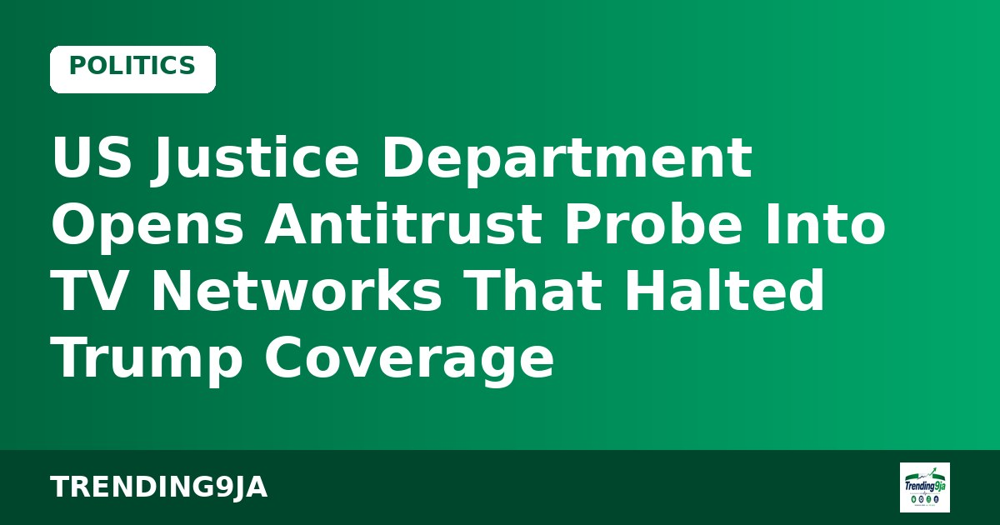
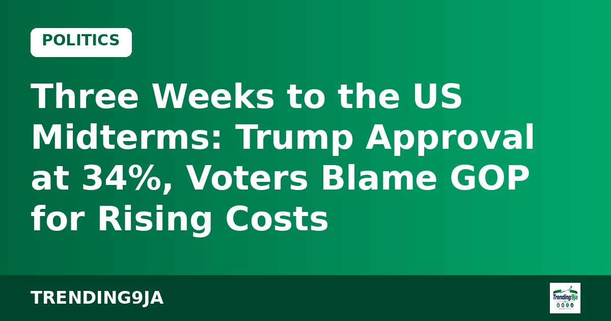
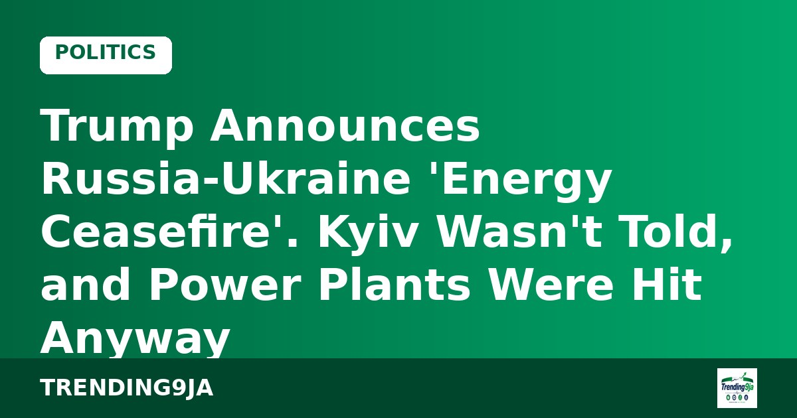

US Relaxes Select Canadian Import Tariffs Before Midterm Elections
Donald Trump's administration has reduced import duties on select Canadian goods following political pressure ahead of US midterm polls, according to Vanguard.
Political news from USA. (8 stories)

Donald Trump's administration has reduced import duties on select Canadian goods following political pressure ahead of US midterm polls, according to Vanguard.
Nearly $175 million in outside ad money, a Democrat leading narrowly in polls and Trump's third Texas trip in under a month.

ABC, CBS, CNN, NBC and Fox are under review after a press-access boycott; press groups call it intimidation.

An FT poll puts disapproval at 59%, and troops near a D.C. ballot drop box raise eyebrows.

Zelenskyy tells ABC "it's up to our people" to pick their leader and says elections are possible after a 60-day total ceasefire.
The campaign cost up to $20m; the administration says it was ending Sunday anyway. Also: a Newsom death-row move and Kansas Senate polling.
Up to 3 million tonnes promised, critics call it a sanctions rollback, and some Republicans want it blocked.
Kyiv hits back as a Russian strike on Zaporizhzhia kills 20, including three children.
No stories from the past week here yet. Check back soon.